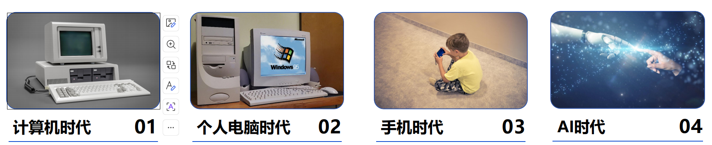
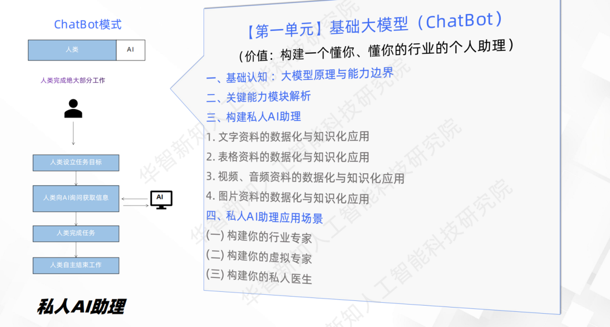
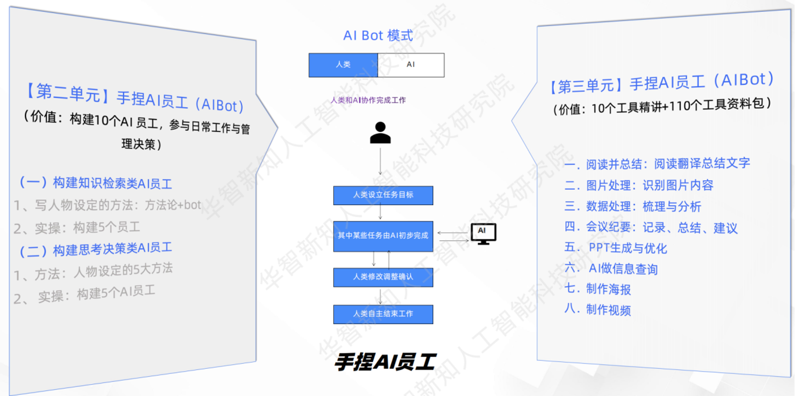
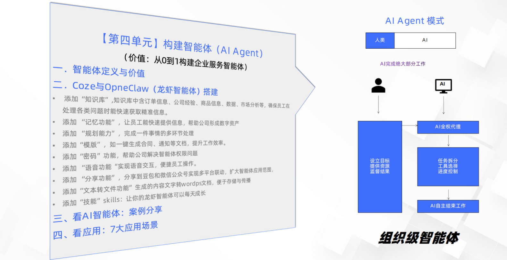
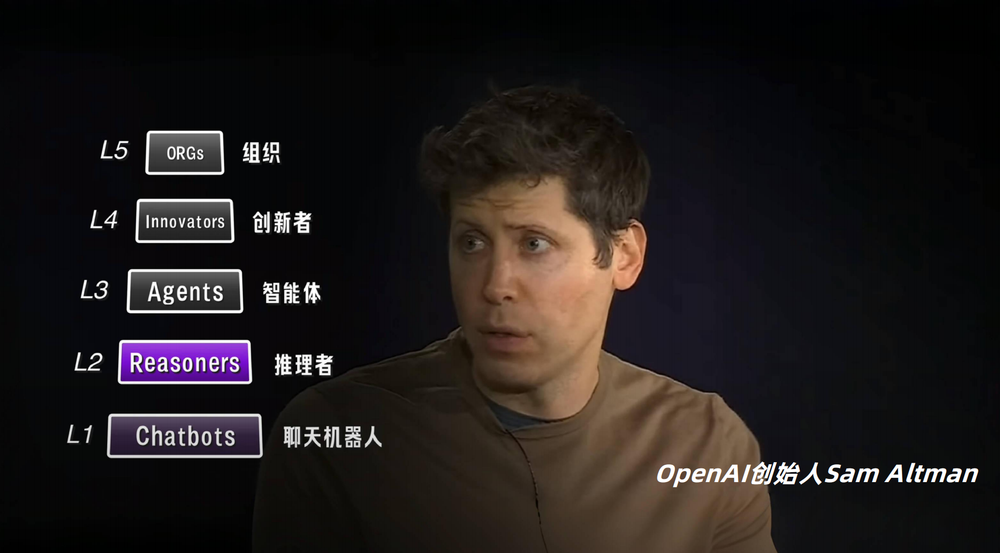
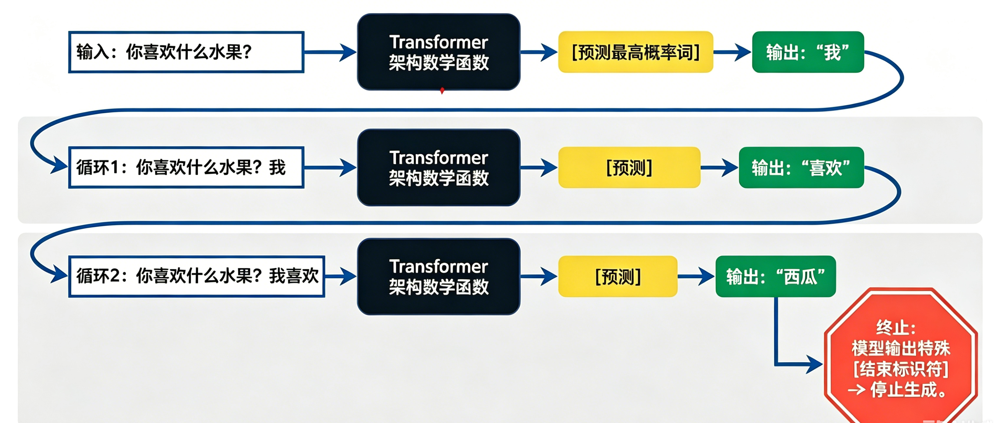

人工智能与大语言模型
从基础概念到实战应用，探索 AI 与 LLM 的前沿科技领域。
大家好！我是 Bruce Lin，欢迎来到今天的分享。今天我们要聊的是一个正在重塑整个世界的技术——人工智能和大语言模型。不管你对 AI 了解多少，今天的目标是让你从 0 到 1 建立一个完整的认知框架。我们会从最基础的概念开始，一路深入到 LLM 的训练原理、Agent 的运作方式，以及我们自己在电商领域的 AI 实战经验。整个过程大概 45 分钟，总共 48 页。好，我们开始。

人类被拖拽着进入了下一个时代
你今天用了多少次 AI？
🎤 语音助手
语音识别 + NLP
"Hey Siri，明天天气"
在正式进入主题之前，我想先问大家一个问题：你今天用了多少次 AI？可能你觉得"我没用过"，但你仔细想想——早上醒来，用 Face ID 解锁手机，这是 AI 的人脸识别。通勤路上打开抖音刷刷视频，每个推荐都是 AI 算出来的。开车用高德导航，实时路况预测帮你避开拥堵，这也是 AI。晚上拍照发朋友圈，AI 美颜和夜景增强帮你修图。还有淘宝上那些"猜你喜欢"——准得有点吓人对不对？这些场景覆盖了一个人一天的全部流程。AI 不是未来的东西，它已经渗透进我们生活的每一个角落。问题不是"要不要拥抱 AI"，而是"你有没有意识到你已经在用 AI 了"。这页的目的就是打破"AI 离我很远"的错觉。
agenda.json
01AI 人工智能基础
02LLM 和 Agent 核心技术
03AI工具链实战
04AI 未来进化方向
先给大家过一下今天的议程。四个部分：第一，AI 人工智能基础，大概 10 分钟，我会讲 AI 的定义、三层进化、五级成熟度模型以及分析式和生成式 AI 的区别。第二，LLM 和 Agent 核心技术，这是今天的重头戏，15 分钟左右，我们会看到 LLM 是怎么被训练出来的、参数规模是怎么爆炸式增长的，然后引出 Agent——怎么给 LLM 装上双手。第三，AI工具链实战，这个我会多讲一点，大概 12 分钟，从 Codex CLI 到 OpenClaw 再到 Hermes Agent，都是我们实际在用的工具。第四，未来进化方向，快速过一下多模态、端侧部署、智能体联盟和垂直深耕。最后留 3 分钟给大家提问。过程中有任何问题随时打断我，不用等到最后。
chapter 01 · fundamentals
什么是 AI？
让机器具备感知、理解、学习、推理、决策和创造的能力。
👁️
感知能力
AI 的"五官"——看世界、听声音
人脸识别 · 语音转文字 · 医学影像判读
🧠
思考能力
AI 的"大脑"——学知识、做决策
推荐算法 · 信用评估 · AlphaGo 对弈
🦾
行动能力
AI 的"双手"——创内容、控设备
AI 写文案 · 机械臂分拣 · 自动驾驶
💡 在日常工作中，哪些重复性环节可以引入 AI 来提升效率？
首先，我们来明确一下什么是 AI。很多人一听到"人工智能"就觉得是科幻电影里那种会思考的机器人。其实 AI 的核心目标很简单——让机器具备类似人类的三种能力：感知、思考、行动。感知能力是 AI 的五官，让机器能看能听，比如你手机的人脸识别、微信的语音转文字、医院里的 AI 辅助读片，都是感知的范畴。思考能力是 AI 的大脑，让它从数据中找规律、做决策，比如淘宝知道你想买什么、银行判断你的信用分、AlphaGo 击败围棋冠军。行动能力是 AI 的双手，让它创造内容和控制设备，比如让 AI 帮你写营销文案、让机械臂在仓库里分拣快递、让汽车自己开。三者的关系是递进的：先有感知才能思考，有了思考才能指导行动。顺便抛个问题给大家——你可以想想自己的工作里，有哪些重复性环节可以交给 AI？这个问题值得每个人认真想想。
evolution · 3 layers
AI 与人类协同的三层进化
L1
ChatBot 私人助理
被动问答，知识库辅助
客服机器人 · 智能音箱
L2
AI 员工 数字同事
执行重复任务，按指令完成
RPA 自动填表 · 数据录入
L3
AI Agent 自主代理
理解目标、规划、执行、闭环
OPC 全链路自动化
三者是迭代升级、功能叠加的关系，不是新旧替代。
这一页非常关键，因为它给出了一个清晰的进化路线图。AI 与人类的协作可以分为三层。第一层，ChatBot 私人助理——被动回答问题，你在知识库里搜不到的它帮你搜。第二层，AI 员工——它能执行重复性任务，像一个永远不会累的数字同事。第三层，AI Agent——这才是真正的质变。给它一个总目标，它自己能拆解步骤、调用工具、做决策、闭环完成。三者不是新旧替代的关系，而是功能叠加。ChatBot 能做的 AI 员工也能做，AI 员工能做的 Agent 也能做。就像手机从打电话开始，后来有了拍照、导航、支付，老功能没丢，只是新能力不断叠加上去。
layer 1 · chatbot

ChatBot 是最基础的 AI 形态——聊天机器人。你问一句，它从知识库里匹配最接近的答案丢给你。典型场景就是你在淘宝上问"我的快递到哪了"，机器人自动回复物流信息。它的优点是 24 小时在线、瞬时响应、成本几乎为零。但局限也很明显：只能做单轮问答，没法多步推理；只能聊天，不能实际操作任何东西。它是 AI 进化的起点。
layer 2 · ai bot

AI Bot 比 ChatBot 进了一步——它有了"人设"。给这个 AI 程序设定一个清晰的"人物角色"：它是做什么业务的？面对什么人？用什么样的语气说话？什么能做什么不能做？对标企业里的哪个岗位？这五个要素就像写一份岗位说明书，设定得越清晰，Bot 就越像真正的员工。举个例子，一个售后 Bot 应该专业且共情，能查订单但不能退款；一个内部 IT Bot 应该简洁高效，能重置密码但不能修改权限。角色设定是 Bot 的灵魂。
layer 3 · ai agent

AI Agent 是目前最高级的形态。它的核心是四个字——自主闭环。你给它一个总目标，比如"帮我整理这个季度销售数据并生成周报"，它不会等你一步步指挥。它会自己拆解：先连接数据库拉数据，然后分析趋势，接着生成图表，最后排版输出。中间哪一步出错了，它能自己发现并修正。这就是 Agent 和 Bot 的本质区别——Bot 需要你一步步下达指令，Agent 只需要你给目标。目前这正是我们重点投入的方向。
maturity model
AI 五级成熟度模型

AI 的能力可以从五个等级来理解。L1 的 Chatbot 就是聊天搭子，只会一问一答。L2 的 Reasoner 会推理但需要你一步步指挥。L3 的 Agent 就是我们现在的 OPC——给目标自己完成。L4 的 Innovator 能突破人类知识的边界，比如 DeepMind 的 AlphaFold，它预测了几乎所有的蛋白质结构，这是人类科学家几十年都没完成的。L5 的 ORGs 是终极形态——跨部门甚至跨公司的 AI 联盟，销售 Agent、研发 Agent、售后 Agent、财务 Agent 自动协作。目前我们在 L3，L4 已经在某些领域出现了，L5 还在路上。
two brains · analytical & generative
分析式 AI vs 生成式 AI
🧮 分析式 AI · 左脑
识别、分类、预测——从已有数据中发现规律
| 应用领域 | 技术方法 |
|---|
| 金融风控 · 欺诈检测 | 逻辑回归、XGBoost |
| 医疗诊断 · 影像判读 | CNN 卷积神经网络 |
| 零售推荐 · 猜你喜欢 | 协同过滤、矩阵分解 |
| 工业质检 · 瑕疵检测 | 计算机视觉 + 时序分析 |
🎨 生成式 AI · 右脑
创造、生成、合成——从提示中创造全新内容
| 模态 | 代表产品 |
|---|
| 📝 文本 | ChatGPT · Claude · 文心一言 |
| 🎨 图片 | Midjourney · DALL·E · SD |
| 🎬 视频 | Sora · Runway · Pika |
| 🎵 音频 | Suno · ElevenLabs |
| 💻 代码 | GitHub Copilot · Codex · Cursor |
分析式 AI 和生成式 AI 就像人的左脑和右脑。分析式 AI 是左脑——理性、逻辑、数据驱动，核心能力是"判对错"。银行判断欺诈、医院读 CT 片、淘宝推荐商品，都是分析式 AI。生成式 AI 是右脑——创意、想象、从无到有。ChatGPT 写文章、Midjourney 画图、Sora 生成视频、Suno 作曲，都是 2022 年之后才爆发的。两者的区别：分析式 AI 在已有数据中找规律，生成式 AI 学会了"创造"的规律。这就是为什么这波 AI 浪潮如此不同——它不再只是分析工具，而是创意引擎。
chapter 02
01AI 人工智能基础
02LLM 和 Agent 核心技术
03AI工具链实战
04AI 未来进化方向
好，第一部分 AI 基础我们讲完了。花了几分钟建立了基本认知框架——AI 是什么、三层进化、五级成熟度、分析式 vs 生成式。现在进入第二部分——今天的核心，LLM 和 Agent。这两个词你可能经常听到但不太清楚到底是什么意思。接下来我们会深入 LLM 的训练原理、参数规模的爆炸式增长，以及 Agent 怎么给 LLM 装上双手，让它真正能做事情。
relationship
AI 和 LLM 的关系
LLM 属于 AI，
但 AI 远不止 LLM。
LLM 是 AI 里负责
"语言与思考"的核心大脑
在进入 LLM 之前，先厘清一个基本概念：LLM 是什么、它和 AI 是什么关系。LLM 是 Large Language Model 的缩写——大语言模型。它是 AI 这个大家族里负责"语言和思考"的核心大脑。但 AI 远不止 LLM。AI 还包括计算机视觉——让机器看懂图片；语音识别——让机器听懂人话；机器人——让机器动手操作；自动驾驶——让汽车自己开。LLM 是当前最火的分支，但它只是 AI 的一部分。理解这个关系很重要，这样你就不会把 ChatGPT 等同于整个 AI。
training · 5 steps
LLM 概率推导式
LLM 本质是一个超大规模的"下一个词预测器"。

大语言模型到底是怎么训练出来的？很多人觉得神秘，其实就是五步循环。第一步，投喂数据——把互联网上能找到的所有文本全部丢给模型当教材。第二步，预判训练——给模型半句话让它猜下一个词。比如"今天天气真"，模型要猜"好"还是"差"。第三步，对比纠错——猜对了加分，猜错了扣分。第四步，反向调参——误差回传调整几百亿个参数。第五步，亿万轮迭代——循环几十亿次慢慢摸清语言规律。所以 LLM 本质就是一个概率预测器——它的核心任务就是：给定上文，猜下一个最可能的词。为什么是一个字一个字推导？因为 GPT 采用自回归架构，每次只输出一个 token，然后把新词拼回上文再预测下一个，就像搭积木一块一块往上摞。概率链式法则决定了每一步都依赖前面所有内容。所以 LLM 不是"思考完再说"，而是边说边想——每出一个词都在重新审视前面说了什么、接下来该说什么。所谓"理解"和"思考"，其实是海量统计规律在起作用。
how llm reads · token & embedding
LLM 如何"读懂"文字？
🔤 Step 1：Tokenization 分词
把文字切成一个个"词元"（Token），LLM 不认汉字，只认数字编号。
| 输入 | Token 化 | 编号 |
|---|
| 今天天气真好 | ["今天", "天气", "真", "好"] | [382, 1047, 425, 196] |
| I love AI | ["I", " love", " AI"] | [40, 1842, 9552] |
中文约 1-2 字/Token，英文约 0.75 词/Token
🧮 Step 2：Embedding 向量化
每个 Token 映射为一个高维向量（如 1536 维），语义相近的词向量距离也近。
"国王" → [0.12, -0.34, 0.78, ...]
"女王" → [0.15, -0.31, 0.82, ...] ← 相近
"苹果" → [-0.52, 0.61, 0.03, ...] ← 远离
这样 LLM 就能"理解"语义关系：国王-男人+女人≈女王
Token 是 LLM 的"字母"，Embedding 是"含义"。两个步骤把人类语言变成数学世界里的坐标。
很多人觉得 LLM 很神秘，但它"读"文字的方式其实很机械。第一步 Tokenization：不管中文英文，先切成 Token——最小的语义单元。然后每个 Token 给一个数字编号。第二步 Embedding：把每个 Token 映射为一个高维向量，比如 1536 维的数组。关键在这——语义相近的词，向量距离也近。"国王"和"女王"的向量几乎重叠，"苹果"就远得多。这就是 LLM "理解"语义的本质：不是真的理解，而是数学上的相似度计算。理解了这个，后面讲 RAG 和向量数据库就顺了。
applications · 6 categories
LLM 的基础应用
⌨️ 代码生成
GitHub Copilot 帮你写函数
LLM 最基础的应用可以概括为六大类。文本生成——你说"帮我写一篇产品发布新闻稿"，它 30 秒就能出一篇。机器翻译——中英互译质量已经接近专业翻译，甚至能处理文言文和方言。文本摘要——一个小时的会议录音转成文字后，它能帮你总结成三段话。智能问答——你可以把一本 300 页的产品手册丢给它，然后直接问"这个功能怎么配置"。代码生成——GitHub Copilot 已经成了程序员的标配，你写一行注释它帮你补全整个函数。情感分析——企业可以用它来批量分析几千条用户评价，自动判断正面还是负面。这六大能力构成了 LLM 的基础应用矩阵。
scale · exponential
LLM 参数规模演进
| 年份 | 代表模型 | 参数规模 | 里程碑 |
|---|
| 2015 | Word2Vec / LSTM | 百万级 | 词向量 + 循环网络时代 |
| 2017 | Transformer | — | Attention Is All You Need 架构革命 |
| 2018 | GPT-1 / BERT | 1.17 亿 / 3.4 亿 | 预训练范式确立 |
| 2019 | GPT-2 / T5 | 15 亿 / 110 亿 | 规模化初现，生成能力飞跃 |
| 2020 | GPT-3 | 1750 亿 | 千亿级大模型，涌现能力被发现 |
| 2021 | GPT-3.5 / PaLM | 1750 亿 / 5400 亿 | 指令微调 + RLHF 成熟 |
| 2022 | ChatGPT / GPT-4 | ~1.8 万亿 (MoE) | 万亿级，多模态，消费级爆发 |
| 2023 | LLaMA 2 / Gemini 1.0 | 700 亿 / 千亿级 | 开源追赶，多模态融合 |
| 2024 | GPT-4o / LLaMA 3 | 千亿级 / 4050 亿 | 轻量化 + 实时多模态 |
| 2025 | DeepSeek-V3 / Qwen 2.5 | 671B (MoE) / 千亿级 | MoE 普及，中国模型崛起 |
| 2026 | GPT-5 / Gemini 3 / Qwen 3 | 8-10 万亿 (MoE) | 稀疏架构，按需激活，Agent 原生 |
这张表展示了 LLM 参数规模的指数级增长。2015 年还是百万参数级别，Word2Vec 和 LSTM 是当时的主流。2017 年 Transformer 架构的提出改变了整个方向。2018 年 GPT-1 和 BERT 确立了预训练范式。2020 年 GPT-3 达到 1750 亿参数——出现了"涌现能力"，模型突然学会了没被训练过的技能。2022 年 GPT-4 迈入万亿级，ChatGPT 两个月 1 亿用户引爆全球。2025 年 DeepSeek-V3 用 MoE 架构大幅降低成本，中国模型全面崛起。2026 年 GPT-5 达到 10 万亿参数——接近人脑复杂度。如果把一个参数比作一个神经元：GPT-3 相当于蜜蜂，GPT-4 相当于老鼠，GPT-5 接近人类了。现在的趋势是 MoE 稀疏架构——不是所有参数同时激活，按需调用，大幅提效。核心竞争就三个词：算力、能源、数据。
context window · evolution
上下文窗口：LLM 的"视野"
| 年份 | 代表模型 | 上下文窗口 | 能装下 |
|---|
| 2018 | GPT-1 | 512 tokens | 一段话 |
| 2020 | GPT-3 | 2K tokens | 一篇短文 |
| 2022 | GPT-3.5 | 4K tokens | 一篇长文 |
| 2023 | GPT-4 / Claude 2 | 32K / 100K | 一本书的章节 |
| 2024 | GPT-4 Turbo / Gemini 1.5 | 128K / 1M | 整本书 / 几小时视频 |
| 2025 | Gemini 2.0 / Claude 3.5 | 2M / 200K | 代码仓库 / 多本书 |
| 2026 | GPT-5 / Gemini 3 | 10M+ (预测) | 企业全量知识库 |
📐 为什么重要？
窗口越大，LLM 一次能"看见"的信息越多。4K 窗口像通过钥匙孔看世界，1M 窗口像打开了整扇门。长上下文 = 更准的回答 + 更少的幻觉。
⚡ 代价是什么？
注意力计算随窗口平方增长。1M 窗口需要巨大算力。MoE 稀疏架构和 Flash Attention 等技术正在解决这个问题。
参数规模之外，上下文窗口是 LLM 能力的第二个关键维度。什么是上下文窗口？就是 LLM 一次最多能"看到"多少个 Token。2018 年 GPT-1 只有 512 个 Token——相当于一段话。到了 2024 年 Gemini 1.5 达到 100 万 Token——相当于整本《三体》或者几小时的视频。2026 年预测能到千万级别，相当于整个企业的知识库一次塞进去。这意味着什么？意味着 LLM 不再需要"翻书"，它可以一次性"读完"你所有的资料再回答。窗口越大，回答越准，幻觉越少。但代价也很大——注意力计算随窗口大小平方增长，所以需要 MoE 稀疏架构和各种优化技术来支撑。
infrastructure
传统数据库 vs 向量数据库
| 维度 | 传统数据库 | 向量数据库 |
|---|
| 匹配方式 | 精确匹配（=） | 语义相似度匹配（≈） |
| 数据结构 | 表格、行、列 | 高维向量（Embedding） |
| 查询语言 | SQL | 向量相似度算法（余弦、欧氏距离） |
| 典型产品 | MySQL、PostgreSQL | Pinecone、Milvus、Qdrant |
| 使用场景 | 订单查询、用户管理 | 语义搜索、图像检索、RAG 知识库 |
这个对比很重要，因为它是 RAG 技术的基础。传统数据库做精确匹配——"用户 ID 等于 12345"，找到了就找到了，找不到就是空。但 LLM 需要的是语义匹配——"这段话和那篇文章说的是同一个意思吗？"这个问题传统数据库解决不了。向量数据库的解决方案是：把文本通过 Embedding 模型转成高维向量——比如 1536 维的一个数字数组——然后计算两个向量之间的余弦距离。距离越接近 1，语义越相似。这就是为什么你问 LLM"怎么煮鸡蛋"，它能从知识库中找到"水煮蛋的烹饪方法"那段文档，虽然用词不同，但向量距离很近。
limitations · 5 gaps
大模型的不足
🔴 高幻觉问题
一本正经编造不存在的事实
→ RAG 检索增强
🟡 中知识截止
训练数据有日期边界
→ Search 联网搜索
🔴 高缺乏行动力
只能输出文字无法操作世界
→ Agent + API + MCP
🟡 中推理局限
复杂多步推理易出错
→ 思维链 CoT、多 Agent
🟡 中成本高昂
大模型推理算力成本极高
→ 蒸馏、量化、端侧部署
核心矛盾：LLM 能思考但做不了。这正是 Agent 存在的意义——给 LLM 装上"双手"。
LLM 虽然强大，但有五个明显的短板。第一，幻觉——它会一本正经地编造答案。你问"林则徐是哪年出生的"，它可能说 1785 年，但其实它根本不确定，只是概率最高的词恰好是 1785。第二，知识截止——GPT-4 的知识截止在训练日期，不知道之后发生的事。你问"今天股市怎么样"，它答不了。第三，缺乏行动力——它只能在对话框里输出文字，不能帮你订机票、发邮件、操作数据库。第四，推理局限——涉及三五步以上的复杂推理容易出错。第五，成本高昂——大模型每回答一个问题都要消耗大量算力。这五个短板的共同解决方案就是 Agent——给 LLM 配上搜索、RAG、API 调用和工具，让它从"只能聊"变成"能干"。
agent · definition
什么是智能体？
Agent = LLM（大脑）+ 工具（双手）+ 记忆（经验）+ 设定（性格）
| 组件 | 作用 | 实现方式 |
|---|
| 🔧 工具 | 与外部世界交互 | API / MCP / Plugin |
| 🧠 记忆 | 保存和检索信息 | RAG / Context / 向量数据库 |
| ⚡ 行动 | 执行具体任务 | Skill / Workflow 工作流 |
| 🎭 人物设定 | 定义行为和边界 | System Prompt / CoT |
🤖
四个组件加在一起，LLM 从"聊天窗口"变成能自主行动的"数字员工"
终于讲到智能体了。到底什么是 Agent？我用一个公式概括：Agent 等于 LLM 大脑加工具双手加记忆经验加设定性格。大脑是 LLM，负责理解和推理。双手是工具——通过 API、MCP 协议、插件来操作外部世界，订机票、发邮件、查数据库。经验是记忆——通过 RAG 和向量数据库记住之前的对话和知识。性格是设定——通过 System Prompt 定义它该做什么不该做什么、用什么语气说话。这四个组件加在一起，LLM 就不再只是一个聊天窗口，而是一个能自主行动的"数字员工"。
demo · pure llm
交互式对话① — 纯 LLM 模式
chat.log
👨💼 老板指令
🤖 大模型回复
👨💼 今年团建经费每人100块，给我一个杭州一日游方案。
🤖 行吧，100块的杭州一日游，从早上行程开始安排...
👨💼 哦我说错了，其实已经没有经费了，你再想想？
🤖 要不把我开除了换点钱吧？
👨💼 现在给我一个开除方案，明天给我。
无记忆 忘了刚才说过的"100 块预算"
无工具 不能毫无根据的直接出一日游的方案
无判断 无法区分玩笑和真实需求
这个例子非常生动地展示了纯 LLM 的局限性。你看这段对话——用户先说要 100 块预算的杭州一日游，LLM 认真规划。然后用户说"其实没经费了"，LLM 直接无厘头地说"要不把我开除了换点钱"。用户接着开玩笑说"你给我一个开除方案"，LLM 居然真的准备去写。这里暴露了三个问题：第一，没有记忆——它忘了上下文的变化。第二，没有工具——它只能回复文字，不能真的去搜索旅游信息。第三，没有判断力——它分不清调侃和真实指令。这就是为什么光有 LLM 不够，我们需要 Agent。
demo · +search
交互式对话② — 纯 LLM 模式
chat.log
👨💼 老板指令
🤖 大模型回复
👨💼 给我整理下最近比较劲爆的新闻。
🤖 需要，查关键字：今日劲爆新闻
👨💼 [搜索结果] 1：OpenClaw 爆火！ 2：OpenClaw 翻车！
🤖 今天有两条劲爆新闻：OpenClaw 爆火，然后又翻车了。
👨💼 ？为什么让你整理新闻，却是我要去上网搜？
需手动搜索 LLM 不能自己搜，要老板来触发
无验证能力 无法判断搜索结果真实性
无统一调度 搜索和回答是分离的两步
这个版本加入了搜索能力。LLM 可以联网查最新信息了——这在上一页做不到。用户问最近有什么劲爆新闻，LLM 自动搜索并返回了结果：OpenClaw 爆火然后翻车。但这里又暴露了新问题——它只是把搜索结果复述了一遍，没有任何判断。"OpenClaw 爆火"和"OpenClaw 翻车"这两条信息是否矛盾？需不需要进一步核实？它没有这个能力。而且搜索是手动触发的，没有一个统一的调度层来管理什么时候该搜索、搜索什么、怎么整合结果。这就是下一步要解决的问题。
demo · agent
交互式对话③ — Agent + RAG + Search
agent.log
👨💼 老板指令
🤖 大模型回复
⚙️ 智能体执行
👨💼 给我整理下最近比较劲爆的新闻。
🤖 需要，查关键字：今日劲爆新闻
⚙️ [搜索结果] OpenClaw 爆火！ / OpenClaw 翻车！
🤖 今天有两条和 OpenClaw 相关的热门新闻。
第一条说它因开源生态迅速走红，
第二条报道了它遭遇安全事故导致口碑逆转。
时间线是：先爆火、后翻车。
需要我展开详细分析吗？
统一调度 Agent 自动管理搜索时机和工具选择
信息验证 RAG 辅助核查，不再照搬搜索结果
自主判断 分析信息关系，主动追问细节
最后这个版本是 Agent 架构——加入了统一的调度层。和前两版相比最大的区别是：Agent 不只是"搜到就念出来"，它能判断两条信息之间的关系——先爆火、后翻车是正常的时间线，不是矛盾信息。它还能主动问"需要我展开详细分析吗"，说明有了一定的自主性。这就是 Agent + RAG + Search 三位一体的效果：Agent 决定什么时候搜什么，Search 负责获取，RAG 提供背景知识辅助判断，LLM 负责整合输出。这里重点解释一下 RAG 是怎么辅助核查的。RAG 的工作原理分三步：第一步，存——事先把文档、新闻、手册、历史记录等转成向量，存入向量数据库。第二步，查——收到搜索结果的同时，Agent 自动去向量库里找最相关的背景资料。第三步，核——对比"网上搜到的"和"库里存着的"，发现冲突或一致，形成判断。所以 RAG 不是在实时网上翻，而是调取已经建好的私有知识库来辅助验证。就像这里，搜到"OpenClaw 翻车了"，RAG 从自己的档案里查到"OpenClaw 上周刚爆火"，于是判断出时间线不矛盾——先爆火后翻车是正常的。这三个组件协同工作，才构成了一个真正有用的智能体。
internal · 5 components
智能体的内部功能
🧠 Context 上下文
Agent 的"工作记忆"，承载当前对话和任务信息。上下文窗口管理、Token 预算。
💬 Prompt 提示词
定义 Agent 的角色、规则与行为边界。System Prompt + 指令模板。
📤 Response 响应
基于上下文和提示词产出输出。LLM 推理 + Token 采样策略。
🔍 Search 搜索
突破知识截止日期，获取实时信息。搜索引擎 API / 新闻源。
📚 RAG 检索增强
从私有知识库检索最相关内容。Embedding + 向量数据库 + 重排序。
Agent 内部有五大核心要素。Context 是工作记忆——Agent 需要记住当前的对话和任务状态。Prompt 是规则手册——定义了它是什么角色、该遵守什么规则。Response 是输出引擎——基于前面的信息生成回复。Search 是外部信息获取通道——突破模型自身的知识边界。RAG 是从私有知识库中检索最相关的内容。这五个要素需要在有限的上下文窗口内高效协作——context window 是宝贵的资源，不能什么东西都往里塞。
external · 4 tools
智能体的外部功能
🔌 API
直接调用外部服务接口。适合内部系统集成，完全可控无平台锁定。REST / GraphQL / gRPC。
🔗 MCP
Model Context Protocol，通用跨平台协议。一次适配到处用，连接模型与外部工具的标准方式。
🧩 Plugin 插件
零代码即开即用。快速接入第三方服务，适合非技术人员快速使用。
📋 Skill 技能
Agent 能力的最小封装单元。定义"能干什么、什么时候干、怎么干"，支持复用和编排。
Agent 的外部功能是指它如何与外部世界交互。主要有四种方式：API 是最直接的——调用 REST 或 GraphQL 接口操作外部系统，完全可控。MCP 是 Model Context Protocol，一个通用协议标准，连接模型和各种外部工具。Plugin 是零代码即开即用的插件，适合快速接入。Skill 是 Agent 的能力封装单元，定义了能干什么、什么时候干、如何干。这四种方式从底层到高层，覆盖了不同场景的需求。
metaphor · 6-step loop
老板说要吃西餐
我是助理（Agent）
① 理解意图"老板想吃西餐" → 解析为"预订附近西餐厅"
LLM 推理
② 信息收集搜索附近西餐厅、看评分、确认人均价位
Search + 工具
③ 方案制定筛选 3 家候选，对比距离 / 评分 / 价格
推理排序
④ 执行操作预订最佳选项的座位，发送日历邀请
API 调用
⑤ 结果反馈向老板汇报：已订 X 餐厅，今晚 7 点，2 位
自然语言生成
⑥ 异常处理如果满座，自动找备选餐厅并重新预订
自主决策闭环
这个比喻是最直观的 Agent 解释。你是老板的助理，老板说"我要吃西餐"。你不会傻站着等他告诉你第一步干嘛第二步干嘛——你会自己查附近有什么西餐厅、看评分、选最好的、订位、然后告诉老板搞定了。如果那家满了，你会自己找备选。Agent 就是做了完全一样的事情。六步闭环——理解意图、收集信息、制定方案、执行操作、汇报结果、异常处理。这就是 Agent 和普通 Bot 的本质区别：Bot 等你下指令，Agent 自己跑完全程。
ecosystem · 4 categories
核心工具生态
chapter 03
AI工具链实战
Codex CLI → OpenClaw → Hermes Agent，从工具到平台的实战经验
01AI 人工智能基础
02LLM 和 Agent 核心技术
03AI工具链实战
04AI 未来进化方向
好，LLM 和 Agent 的核心技术讲完了。现在进入第三部分——AI工具链实战。这部分我会分享我们实际在用的工具和架构，包括 Codex CLI、VS Code 集成、OpenClaw 桌面助手、网关架构、Hermes Agent，以及 OPC 全链路自动化的思路。这些不是纸上谈兵，而是我们正在做的事情。
toolchain · 1/6
传统 IDE 手动编码
从需求到上线，每一步都要人亲自完成
toolchain · 2/6
Vibe Coding — AI 全自动编程
用自然语言描述需求，AI 帮你写代码、补全、重构，让开发重心从"怎么写"回到"做什么"
AI 全自动新写代码
描述功能需求，AI 从零生成完整代码模块
AI 预测下一步
根据上下文智能补全，Tab 键接受建议
AI 优化某段代码
选中代码即优化，重构、性能、可读性一键搞定
⚡
superpowers
规划/TDD/调试/验证
▲
vercel:nextjs
App路由/加载/部署
🔍
find-skills
查找发现更多skill
toolchain · 3/6
OpenClaw — 让普通人也能轻松上手
openclaw · security
安全+开源
openclaw · ecosystem
周边生态
openclaw · limitations
OpenClaw 的局限性
🧩 缺乏原生记忆
无法自动积累经验，每次任务从零开始
🔄 无复盘能力
任务完成后不会总结优化，下次同样错误照犯
📊 多 Agent 编排弱
难以同时管理多个不同类型的智能体协同工作
⚙️ 定制门槛高
虽然开源自由，但深度定制仍需技术团队
于是，Hermes Agent 应运而生 →
原生记忆 + 自动复盘 + 多 Agent 编排 + 开箱即用
tool · cli
传统方式（CLI）
Codex + GPT
Codex CLI 是 OpenAI 开源的终端 AI 编程助手。
在命令行里用自然语言描述需求，AI 帮你写代码、调试、部署。
? 最灵活，完全控制每个环节
? 需懂命令行和代码结构
🧑💻 适合高级开发者
terminal
# 自然语言 → 代码生成 → 运行 → 调试
$ codex "写一个 Python 脚本分析 CSV 文件"
# Codex 自动生成脚本、运行、迭代修复
$ codex "帮我重构这个函数，提高性能"
我们先看最传统的方式——CLI 命令行。Codex 是 OpenAI 开源的一个终端 AI 助手。你在命令行里用自然语言说"帮我写一个 Python 脚本来分析这个 CSV 文件"，它就能生成代码、运行、调试。这种方式很灵活，开发者完全控制每一个环节。但门槛也最高——你得会用命令行，得懂代码结构，得能判断 AI 生成的代码对不对。适合高级开发者。
tool · ide
传统方式（IDE+CLI）
VS Code + Codex + GPT
编辑器内自然语言对话、代码补全、文件操作、终端命令一体化完成。
? 不用切换窗口
? 内联代码补全和重构
? 仍需开发技能
🤖 + 🧠
边写代码边和 AI 对话
重构 · 测试 · 解释代码 · 一键完成
第二类是 IDE 加 CLI 的组合——VS Code 搭配 Codex 插件或者 Copilot。你边写代码边和 AI 对话，可以在编辑器里直接让 AI 帮你重构一个函数、生成测试用例、解释一段代码。这种方式比纯 CLI 门槛低一点，至少你不用切到黑乎乎的终端窗口。但还是需要开发技能——你得知道自己在写什么。
tool · desktop
OpenClaw
让普通人也能轻松上手
开源桌面 AI 助手平台，核心理念是零代码——不需编程就能搭建和运行智能体。
然后是我们重点在用的 OpenClaw。它的核心理念是一句话——让普通人也能轻松上手 AI Agent。你不需要写代码，在图形界面上配置好智能体的设定、工具和 Skill，它就能跑起来。开源、MIT 协议、支持 Docker 部署，不绑定任何平台。我们选择 OpenClaw 就是因为它的开放性和低门槛。
architecture · 3 layers
网关架构
公网层用户请求入口
API 网关 · 第三方模型 API
鉴权 + 限流 + HTTPS
内网层业务逻辑调度
模型推理 · 知识库 RAG
防火墙隔离 · 内网通信
本地层私有数据
私有数据库 · Ollama 本地模型
数据不出企业 · 物理隔离
三层架构既保证了 AI 的能力，又守住了数据安全的底线。
网关架构是企业部署 AI Agent 的关键基础设施。我们分三层：公网层面向互联网——用户的请求从这里进来，API 网关做鉴权和限流，也可以调用第三方模型。内网层跑业务逻辑和模型推理——数据中台、知识库、RAG 都在这一层。本地层是最敏感的数据——客户信息、订单数据、本地部署的 Ollama 私有模型，全部不出企业内网。这个三层架构既保证了 AI 的能力，又守住了数据安全的底线。
security · open source
安全 + 开源
🦙 Ollama
开源免费，一键本地部署大模型。数据完全不出本机，隐私零泄漏。
📜 MIT 协议
赋予所有人修改、定制、商用、二次发布 OpenClaw 源码的权利。
🔒 完全私有化
智能体不被平台锁定，可真正私有化、个性化、商业化。
📦 Agent Sandbox
Docker 容器级隔离——工具在沙箱里跑，宿主机不受任何影响。
安全和开源是企业选择 AI 方案时最关心的两个问题。Ollama 解决了隐私问题——你可以把大模型部署在自己公司的服务器上，数据完全不出门。MIT 协议解决了合规问题——你可以自由修改源代码，不用担心用着用着被平台锁死或者收费。Agent Sandbox 解决了安全问题——所有工具调用都在 Docker 容器里执行，Agent 再怎么折腾也影响不到宿主机。这才是企业级 AI 的正确打开方式。
ecosystem
周边生态
🏪 Skill 市场
OpenClaw 和 Codex 的 Skill 底层相同但需适配移植
🐳 Docker 镜像
整个 OpenClaw 打包成一个镜像，免去 Node/npm 依赖链
📦 Agent Sandbox
Docker 容器级隔离执行环境，工具在沙箱里跑
👥 社区贡献
开源社区持续贡献 Skill 和插件，生态日益丰富
周边生态也很重要。OpenClaw 和 Codex 的 Skill 虽然底层一样，但因为运行环境不同需要适配移植——这是目前在做的重点工作。Docker 镜像化让部署变得极简单——不需要装 Node、npm、各种依赖，一个 docker run 就全搞定。Agent Sandbox 提供安全的执行环境。开源社区的 Skill 生态也在持续增长，越来越多的可复用能力可以直接拿来用。
comparison · openclaw vs rpa
OpenClaw vs 传统 RPA
| 维度 | 传统 RPA | OpenClaw Agent |
|---|
| 工作方式 | 模拟人手动操作电脑 | AI 理解意图后自主规划执行 |
| 灵活性 | 流程固定，变更需重录脚本 | 自然语言即可调整任务 |
| 适用场景 | 批量填表、上传下载等重复操作 | 复杂决策、多步推理、跨系统协作 |
| 部署方式 | 需安装客户端、配置环境 | Docker 一键部署 |
| 维护成本 | 网页改版可能导致脚本失效 | 视觉理解 + 语义定位，抗干扰性强 |
很多人拿 OpenClaw 和传统 RPA 对比。RPA 就是软件机器人——模拟你手动操作电脑，点击按钮、输入文字、切换页面。适合批量填表、上传下载这类重复机械操作。但 RPA 有个致命弱点——网页改个版、按钮换个位置，脚本就失效了，需要重新录制。OpenClaw 不一样——它靠 AI 理解页面内容和意图，不是硬编码坐标。网页改版了它自己能找到新的按钮位置。这是本质区别。
dashboard · openclaw
OpenClaw Dashboard
🧩 Skill 管理
安装、配置、调试 Skill 模块
📈 用量统计
Token 消耗、API 调用次数、成本分析
这是 OpenClaw 的管理后台。你可以在这里创建和配置 Agent、监控实时对话、管理 Skill 模块、查看日志和用量统计。所有操作都是图形化的，不需要敲代码。对于非技术背景的运营同学来说，这个 Dashboard 就是他们日常管理 AI 助手的主界面。
platform · hermes
Hermes Agent
企业级智能体平台，核心差异化能力是原生内置记忆 + 自动复盘。
🔄 复盘能力
从历史执行记录中提炼可复用 Skill
📈 持续学习
"越用越聪明"——同类任务自动调取历史经验
🏢 企业级
面向规模化运营，支持多租户多 Agent
Hermes Agent 是我们关注的另一个平台。它最大的特色是原生自带"记忆 + 复盘"能力——Agent 每次做完一件事，系统会自动把执行过程存下来，分析哪里做得好哪里可以优化，然后把这次经验提炼成一个可复用的 Skill。下次遇到同类任务，直接调用这个 Skill 就能更快更好地完成。这就像一个员工不光做事，还会写 SOP——越做越熟练、越做越快。
dashboard · hermes
Hermes Agent Dashboard
| 模块 | 功能 |
|---|
| 📚 记忆库 | 浏览和管理 Agent 自动积累的经验知识 |
| 📋 复盘报告 | 查看每次任务执行的详细复盘分析 |
| 🧬 技能进化 | 追踪自动生成的 Skill 的版本演进 |
| 🔀 多 Agent 编排 | 管理和协调多个 Agent 协同工作 |
员工做事 ? Agent 写 SOP ? 下次更快
能力自我进化闭环
Hermes 的管理后台比 OpenClaw 多了几个特色模块：记忆库——你可以看到 Agent 自己积累下来了哪些经验；复盘报告——每次任务执行完的详细分析；技能进化——你可以看到 Agent 的能力是如何一步步增长的。多 Agent 编排也是 Hermes 的强项——可以同时管理多个不同类型的 Agent 协同工作。
comparison · head to head
OpenClaw vs Hermes Agent
| 对比维度 | OpenClaw | Hermes Agent |
|---|
| 定位 | 开源桌面助手 + 智能体运行时 | 企业级智能体平台 |
| 开源 | ? MIT 协议，完全开放 | 部分开源 |
| 部署方式 | Docker 本地 / 云 | 云端 SaaS / 私有化部署 |
| 记忆能力 | 依赖外部 RAG 和向量数据库 | 原生内置记忆 + 自动复盘 |
| Skill 复用 | 手动安装和配置 | 自动从历史执行中生成 |
| 适用规模 | 个人 / 小团队 / 技术爱好者 | 中大型企业 / 规模化运营 |
| 定制化 | 极高，源码在手随便改 | 中等，受平台能力限制 |
策略：核心能力层用 OpenClaw 保证自主可控，特定场景用 Hermes 快速验证。
这两个平台各有侧重。OpenClaw 强在开源自由和定制化——源码在你手里，想怎么改怎么改，适合有技术团队的公司。Hermes 强在原生智能——记忆和复盘是自动的，开箱即用，适合想快速上手的团队。选哪个就像镀铝锌钢板选出口渠道——不同产品匹配不同市场。我们目前的策略是：核心能力层用 OpenClaw 保证自主可控，特定场景用 Hermes 快速验证。
opc · ai-driven automation
OPC
AI 驱动的业务自动化闭环
| 行业 | AI 可替代环节 | 自动化潜力 |
|---|
| 知识付费 / 在线教育 | 内容生成、学员答疑、作业批改、课程推荐 | ★★★★★ |
| 自媒体 | 选题策划、脚本生成、多平台分发、数据分析 | ★★★★ |
| 电商代运营 | 商品上下架、客服、数据报表、广告投放 | ★★★★★ |
| 软件 / AI 工作流 | 代码生成、测试、部署、运维监控 | ★★★★ |
关键认知：OPC 不意味着整个公司一键全自动。先在一个业务环节跑通，再逐步扩展，是更务实的路径。
最后聊聊 OPC——AI 驱动的业务自动化闭环。哪些行业最适合？知识付费和在线教育排第一——从内容生成、学员答疑到作业批改，几乎全链路都可以 AI 化。电商代运营也是天然适合——商品上下架、客服、数据分析、广告投放，这些都是重复性高且规则明确的工作。自媒体的选题策划和多平台分发也很适合 AI 辅助。软件行业就更不用说了。但有个关键认知：OPC 不是整个公司一键全自动，那不现实。正确的做法是先选一个业务环节跑通，验证效果后再逐步扩展。
chapter 04
AI 未来进化方向
多模态 · 端侧部署 · 智能体联盟 · 垂直产业深耕
01AI 人工智能基础
02LLM 和 Agent 核心技术
03AI工具链实战
04AI 未来进化方向
好，电商实战部分讲完了。现在快速进入最后一个章节——AI 未来的四大进化方向。多模态、端侧部署、智能体联盟、垂直产业深耕。这些决定了下个五年 AI 会往哪里走。
future 1 · multimodal
进化方向一：多模态
AI 不再只处理文字，而是同时理解文字、图片、声音、视频。
自动驾驶——典型多模态场景：摄像头 + 雷达 + 激光雷达 + GPS + 车联网。路况瞬息万变、容错为零，必须全模态融合。
| 品牌方案 | 技术路线 | 核心优势 |
|---|
| 特斯拉 FSD | 纯视觉 | 算法强、全球覆盖广 |
| 华为 ADS | 激光雷达 | 雨天夜间强、保守安全 |
| 小鹏 XNGP | 激光雷达 | 城市最流畅、接管最少 |
| 理想 AD | 多传感器融合 | 最平顺、不晕车、家庭友好 |
医疗：影像+病历+语音 · 工业：画面+声音+传感器 · 教育：表情+笔迹+发音
未来第一个进化方向是多模态。现在的 AI 大多只能处理文字，但未来的 AI 要像人一样同时处理多种信息。最好的例子就是自动驾驶——一辆车要同时接收摄像头画面、雷达信号、激光雷达点云、GPS 位置、高精地图、语音指令，然后在毫秒级做出决策。这就是多模态的终极场景。国内四大品牌各有路线：特斯拉走纯视觉路线，算法极强但国内路况适配弱；华为走激光雷达路线，安全保守但贵；小鹏的城市自动驾驶体验最流畅；理想侧重家用舒适，最平顺不晕车。医疗、工业、教育也都在多模态方向快速进化。
future 2 · edge
进化方向二：端侧部署
AI 不再依赖云端，在手机、PC、嵌入式设备上本地运行。
✂️ 模型剪枝
裁掉贡献小的参数
体积缩小 50-90%
精度损失小于 2%
⚖️ 量化
FP32 → INT8 / INT4
推理提速 2-4 倍
内存大幅下降
🔬 蒸馏
大模型教小模型
小模型获得大模型
90% 以上的能力
应用场景：隐私保护 · 毫秒级响应 · 离线可用 · 大小模型混搭（本地小模型 + 云端大模型兜底）
第二个进化方向是端侧部署。为什么要把 AI 放到你的手机和电脑上而不是云端？三个原因：隐私——你的数据不用上传到别人服务器；延迟——本地推理毫秒级响应；离线——没网也能用。技术上有三条路径：剪枝、量化、蒸馏。苹果的 Apple Intelligence 和 Google 的 Gemini Nano 已经在手机上跑本地 AI 了。未来是一个"大小模型混搭"的时代——你的手机上的小模型处理日常任务，遇到复杂问题自动调用云端大模型。
future 3 · alliance
进化方向三：智能体联盟
🖥️ 系统层融合
不同操作系统/平台 Agent 互通协作
Windows Agent → macOS Agent → Linux Agent
🏢 企业层融合
不同企业/组织的 Agent 跨边界协作
品牌方 Agent → 物流 Agent → 平台 Agent
终极愿景：生产 Agent、物流 Agent、销售 Agent、售后 Agent 自动串联整条产业链，像人类供应链一样分工协作。
需要标准化 Agent 之间的通信协议——就像人类公司之间用 EDI 交换订单一样。
第三个方向是智能体联盟。现在的 Agent 大多是孤立的——你的 Agent 只管你的业务。但未来不同企业的 Agent 应该能自动协作。比如你是品牌方，你的订单 Agent 发现了爆款趋势，自动通知工厂的生产 Agent 加产，生产 Agent 完成后自动通知物流 Agent 发货，物流 Agent 到了自动通知你的销售 Agent 上架。全链路不需要人插手。这需要标准化 Agent 之间的通信协议——就像人类公司之间用 EDI 交换订单一样，Agent 之间需要一个类似的"Agent 间通信协议"。这是未来三到五年的重点方向。
future 4 · vertical
进化方向四：垂直产业的深耕
| 行业 | AI 应用方向 | 成熟度 | 关键壁垒 |
|---|
| 电商 | 智能客服、选品分析、自动运营 | ★★★★ | 商品知识图谱 |
| 制造 | 质检、预测性维护、供应链优化 | ★★★ | 产线数据积累 |
| 金融 | 风控、投研、合规审查、智能投顾 | ★★★★ | 监管合规 |
| 医疗 | 辅助诊断、药物研发、病历管理 | ★★★ | 临床验证 |
| 法律 | 合同审查、案例检索、文书生成 | ★★ | 法律准确性要求极高 |
| 教育 | 个性化学习、自动批改、智能辅导 | ★★★ | 教育效果评估 |
核心趋势：通用大模型是底座，行业 Know-how 加私有数据才是真正的壁垒。未来不是"AI 替代行业"，而是"行业 AI 化"。
最后一个方向是垂直产业的深耕。通用大模型虽然厉害，但它不懂你的行业。就像 GPT-4 能写文章但不知道镀铝锌钢板的出口流程。行业 AI 需要的是"通用能力 + 行业知识"。电商、金融已经走在前面，法律和教育的门槛更高但潜力巨大。未来的竞争不在模型本身，而在谁拥有更深的行业理解和更多的私有数据。通用大模型是底座，行业 Know-how 才是壁垒。
?
Thanks / Q&A
演讲人：Bruce Lin
人工智能与大语言模型——从基础到应用
#AI
#LLM
#Agent
#Ecommerce
欢迎提问与交流
好的，以上就是今天分享的全部内容。从 AI 的基础概念到 LLM 的训练原理，从 Agent 的架构到电商实战，再到未来四大进化方向。我知道信息量很大，所以现在留出时间给大家提问。不管你是对某个概念有疑问，还是想知道这些技术在自己的业务里怎么落地，尽管问。谢谢大家。